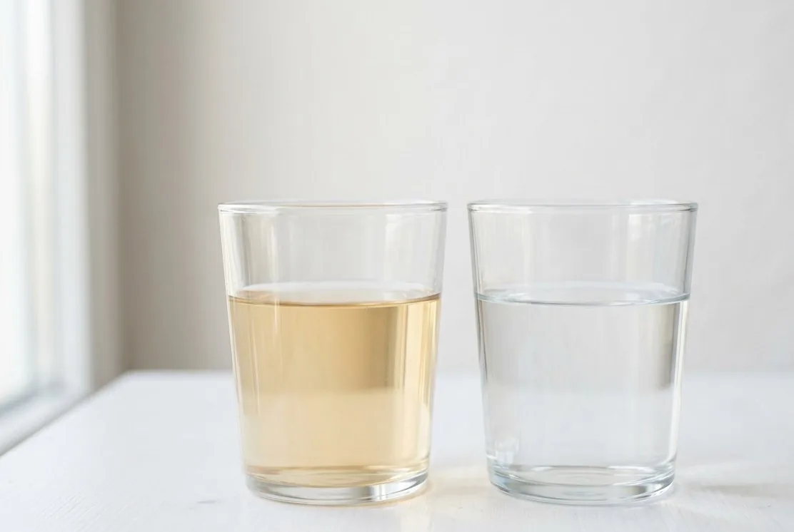

Сорбция
Удаляет часть веществ, влияющих на запах, вкус и цвет.
Где метод не сработает
Ресурс зависит от нагрузки; без предочистки материал может быстро исчерпаться.
Цветность может быть связана с природной органикой, железом, коллоидами или состоянием источника. Схема зависит от анализа и того, меняется ли вода по сезонам.

Органические загрязнения описываются несколькими косвенными и прямыми показателями. Интерпретация зависит от источника и лабораторной программы.
| Наблюдение | Возможные причины | Проверка |
|---|---|---|
| Жёлтый или чайный цвет без осадка | Растворённая органика, цветность, железо | Цветность, окисляемость, железо, pH |
| Болотный или землистый запах | Органика, источник, биоплёнка | Окисляемость, микробиология, состояние источника |
| Ухудшается весной | Сезонное поверхностное влияние | Повторный анализ в период изменения, нитраты, микробиология |
Обратите внимание на цветность и окисляемость: без этой пары разговор о сорбции упирается в предположения.
Выбор диктует природа окраски и запаха, а стоят за ними разные вещества, и ведут они себя неодинаково.
Удаляет часть веществ, влияющих на запах, вкус и цвет.
Ресурс зависит от нагрузки; без предочистки материал может быстро исчерпаться.
Применяется в отдельных схемах для перевода загрязнений в удаляемую форму.
Требует инженерного расчёта, реагентов и контроля, не подходит как бытовой эксперимент.
Может использоваться для отдельного питьевого потока или сложных задач.
Нужны предочистка, давление, дренаж и понимание концентрата.
Сорбционная ступень требует объёма: углю нужно время контакта с водой, и уменьшить корпус без потери результата не выйдет. Поэтому при заметной цветности место занимает далеко не самая маленькая колонна в схеме, а если добавляется окисление или мембранная ступень для кухни, к ней прибавляются ещё корпус и подходы. Полезно сразу прикинуть, где будет стоять сменная загрузка в день обслуживания – её нужно куда-то поставить, а потом вынести.
Первая промывка после засыпки сорбента идёт с угольной пылью и окрашенной водой – это штатный этап запуска, а не авария, но сбрасывать её надо туда, где тёмный сток и мелкая взвесь никому не помешают. В рабочем режиме промывочная вода уносит задержанную органику и цветность, и её попадание в септик нежелательно: органическая нагрузка на камеру и без того есть. Если в схеме появляется мембранная ступень для кухни, у неё образуется собственный постоянный сброс.
Сезонность и состояние источника.
ОткрытьКогда органика сочетается с железом и жёсткостью.
ОткрытьВыбор программы и правильный отбор.
ОткрытьЦветность влияет на стирку, на светлую сантехнику и на работу последующих ступеней, а ещё часто идёт в паре с органикой и железом. Оценивают её не глазом, а цветностью и окисляемостью в протоколе. Метод зависит от того, чем именно окрашена вода, поэтому без анализа выбирают наугад.
Скорее всего, сорбент выработал ресурс раньше ожидаемого: при высокой органической нагрузке это обычная история. Уголь считают по объёму загрузки и времени контакта, а не по размеру корпуса, и почти всегда ставят после предочистки. Если ресурс кончился быстро, пересматривают схему, а не просто меняют картридж.
Сезонная картина – веский аргумент сдать анализ именно в худший период, а не тогда, когда вода выглядит нормально. Схему считают по пиковой нагрузке, иначе весной она перестанет справляться. Часть оборудования иногда разумно включать по сезону, но это решение принимают по цифрам, а не наугад.
Сорбция улучшает вкус, запах и цвет, но питьевую пригодность подтверждает анализ очищенной воды, а не оттенок в стакане. Органика нередко соседствует с микробиологией, а это отдельный показатель, который сорбент не закрывает. Поэтому для кухни часто делают отдельную ступень и проверяют результат протоколом.
Даже при похожем цвете протоколы расходятся по окисляемости, железу и сезонности, а сверху накладываются расход дома, давление, место и дренаж. Просите разложить предложение по ступеням и объяснить назначение каждой. Если разницу не объясняют показателями, есть смысл сравнить с другим подрядчиком.
Ответим, что проверить и сколько это будет стоить.